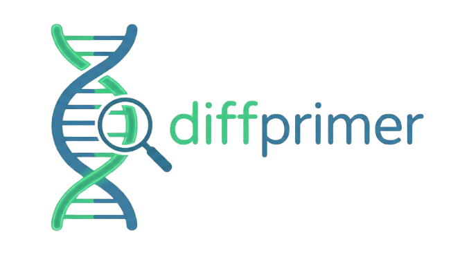

Welcome to DiffPrimer

DiffPrimer is a high-performance bioinformatics pipeline engineered for the discovery of taxonomically exclusive genomic regions and the automated design of highly specific Polymerase Chain Reaction (PCR) diagnostic primers.
By integrating alignment-free \(k\)-mer set arithmetic with the industry-standard Primer3 engine, DiffPrimer systematically isolates genetic markers unique to a target organism against a comprehensive background of off-target genomes.
Key Features
- Exclusive Region Discovery: Rapidly identifies genomic subsequences present strictly within your target reference while being entirely absent across a designated background genomic database.
- Automated Primer Design: Seamlessly integrates with Primer3 to generate thermodynamically optimal primer pairs tailored specifically for the discovered exclusive regions.
- Rigorous Specificity Verification:
- Validates all candidate primer pairs exhaustively against every provided background genome.
- Employs a robust two-stage verification algorithm, combining the Myers Bit-Vector Algorithm for rapid global homology filtering with Needleman-Wunsch Semiglobal Alignment to detect complex off-target hybridizations involving indels.
- Implements a configurable Positional Mismatch Penalty Array, mathematically modeling the biochemical necessity of 3' terminal matching to prevent false-positive amplification.
- Annotation Integration: Cross-references discovered unique amplicons with standard GFF3 annotation files, directly mapping diagnostic markers to their corresponding gene products.
- High-Performance Parallelization: Leverages a highly concurrent Rust core, ensuring scalable and rapid execution across large-scale genomic datasets.
Pipeline Architecture
The DiffPrimer computational workflow operates in three distinct phases:
- Alignment-Free Region Identification: The pipeline scans the target reference genome, dynamically subtracting any \(k\)-mers shared with the background set. Contiguous blocks of unshared \(k\)-mers are assembled into continuous unique amplicons.
- Thermodynamic Primer Design: For each assembled unique region, the system interfaces with Primer3 to compute and retrieve the optimal primer pairs adhering to strict thermodynamic constraints.
- In Silico Specificity Verification: (Highly Recommended) The pipeline exhaustively tests the designed primers against the background genomes. By penalizing local mismatches, particularly at the 3' end, the system definitively tags each primer pair, ensuring that cross-reactive false positives are strictly filtered out.
Installation
Quick install (recommended)
We recommend using uv to install diffprimer because it is incredibly fast and automatically handles virtual environments for you.
(If you don't have uv installed, it takes only a few seconds. Follow the official uv installation guide.)
uv tool install diffprimer
Alternative methods
If you prefer pipx, you can also use it to install diffprimer safely in an isolated environment.
(If you don't have pipx installed, follow the official pipx installation guide.)
pipx install diffprimer
Or, using standard pip:
pip install diffprimer
Requirements
- Python 3.13 or newer
- Rust is NOT required for end users
Development install
If you want to contribute or build from source:
-
Clone the repository:
git clone https://github.com/omatheuspimenta/diffprimer.git cd diffprimer -
Create a Virtual Environment:
# Using uv (Recommended) uv venv --python 3.13 source .venv/bin/activate # OR using standard python python3.13 -m venv .venv source .venv/bin/activate -
Install:
uv pip install -e . # OR pip install -e .Note: Rust is required to build the core engine from source. Install via rustup.
Citation
[!NOTE]
Official citation information is pending publication.
Contributing
We welcome contributions from the computational biology community! Should you encounter bugs, require technical support, or wish to propose new features, please submit an issue via our GitHub repository.
Pull requests are encouraged. Please ensure that all proposed changes are accompanied by appropriate test coverage.